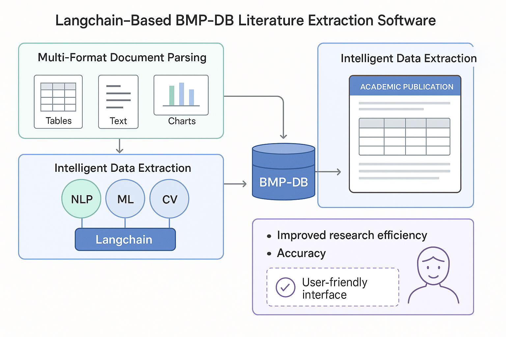

图1：Streamlit文献提取软件主界面 - 支持多文件批量处理
智能化科研文献数据处理解决方案
在环境工程研究领域，研究人员需要从大量科学文献中提取BMP（生物甲烷潜力）相关的数据，包括表格、文本和图表信息。传统的人工提取方式效率低下，容易出错，且无法处理海量文献数据。
随着科研文献数量的快速增长和人工智能技术的成熟，开发一个智能化的文献数据提取软件成为迫切需求。该项目旨在通过Langchain框架和先进的NLP技术，实现文献数据的自动化提取和处理，为环境工程研究提供强有力的数据支持。
通过构建BMP-DB专业数据库，整合提取的科研数据，显著提高研究工作的效率和数据质量，推动整个领域的技术进步。
Langchain是一个强大的LLM应用开发框架，能够构建智能化的数据处理流程，支持多模态数据理解和结构化信息提取。
系统采用多阶段处理流程：首先将PDF文献转换为Markdown格式，提取其中的图片和文本内容；然后使用Langchain框架结合GPT模型进行智能信息提取；最后将提取的数据结构化存储到BMP-DB数据库中。

如图1所示，软件提供了直观的用户界面，支持PDF文件上传、批量处理和实时进度监控。用户可以通过简单的操作完成复杂的文献数据提取任务。
本系统采用模块化设计，包含文献解析模块、数据提取模块、智能处理模块、数据库管理模块和用户界面模块，各模块协同工作，实现文献数据的智能化提取和处理。
PDF转Markdown、图片提取和内容解析
基于Langchain的AI信息提取
图片分类、数据提取和图表分析
BMP-DB数据存储和管理
为生物甲烷潜力研究提供数据支持，加速相关科研项目的进展。
支持大规模文献数据的自动化提取和分析，提高研究效率。
构建专业数据库，为科研机构提供数据管理和分析工具。
为研究生和科研人员提供便捷的文献数据处理工具。
支持批量处理，多线程并行执行，显著提升文献数据处理速度，相比传统人工方式效率提升10倍以上。
| 参数 | 指标值 | 说明 |
|---|---|---|
| 支持格式 | PDF、Markdown | 主流文献格式支持 |
| 处理能力 | 批量处理 | 支持多文件同时处理 |
| AI模型 | GPT + Langchain | 先进的AI信息提取技术 |
| 数据存储 | BMP-DB | 专业数据库支持 |
| 用户界面 | Streamlit | 现代化Web界面 |
项目成功实现了文献中BMP相关数据的自动化提取，包括表格、文本和图表信息，大幅提高了数据提取的准确性和效率。通过软件工具的应用，显著提升了环境工程领域研究的工作效率和数据质量。
构建了定制数据库BMP-DB，整合提取的数据，为科学研究提供了可靠的数据支持。该项目的成功实施，为后续类似项目积累了宝贵经验，进一步巩固了在NLP、ML和全栈开发方面的技术能力。